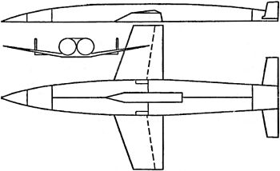

Космические бомбардировщики Эйгена Зенгера
Как мы помним, одним из самых горячих сторонников идей Макса Валье о превращении аэроплана в космический корабль был знаменитый автомобильный магнат Фриц фон Опель. 30 сентября 1929 года он сам поднял в воздух планер с ракетными ускорителями и едва не погиб, когда этот планер загорелся. Однако список поклонников идей Валье будет неполон, если мы не вспомним австрийского инженера Эйгена Зенгера, который состоял членом «Немецкого ракетного общества», а во времена Третьего рейха предложил проект высотного бомбардировщика с ракетными двигателями.
Долгое время существовало мнение, что ракеты должны возвращаться в нижние слои атмосферы под небольшим углом, и почти до конца Второй мировой войны все расчеты строились именно на этом. Но в 1944 году доктор Эйген Зенгер в сотрудничестве с математиком Иреной Бредт, впоследствии ставшей его женой, предложили новую концепцию. Согласно их теории, ракету следовало возвращать на землю под углом, близким к прямому. Зенгер и Бредт подготовили соответствующий научный доклад, который, однако, был немедленно засекречен и в количестве 100 экземпляров разослан только наиболее крупным ученым и специалистам. Впоследствии несколько экземпляров доклада, озаглавленного «Дальний бомбардировщик с ракетным двигателем», были обнаружены специальными разведывательными группами союзников.
Зенгера интересовал вопрос, что будет, если крылатая ракета войдет в плотные слои атмосферы — скажем, на высоте 40 километров — слишком быстро и слишком круто. Из доклада было ясно, что в этом случае ракета должна рикошетировать, подобно плоскому камню, касающемуся поверхности озера. «Отскочив» от плотных слоев, ракета должна снова уйти вверх, в более разреженные слои атмосферы. Пролетев некоторое расстояние, ракета опять попадет в плотные слои и вновь рикошетирует. В целом траектория ее полета будет представлять волнистую линию с постепенно «затухающей» амплитудой. По расчетам Зенгера и Бредт, такая траектория весьма значительно повышала возможную дальность полета крылатой ракеты.
Основываясь на этом, Зенгер создал концепцию ракетного «бомбардировщика-антипода». Предполагалось, что длина его составит около 28 метров, размах крыльев — почти 15 метров, сухой вес — 20 тонн, вес топлива и бомбовой нагрузки — 80 тонн. Таким образом, полный стартовый вес доводился до 100 тонн. Но при таком весе очень много топлива требовалось бы для взлета; тут не помогли бы и стартовые ускорители. Выход, предложенный доктором Зенгером, заключался в том, чтобы построить длинный прямой стартовый трек с рельсами длиной 3 километра. Самолет помещался бы на салазки, на которых устанавливалось любое необходимое количество ракетных двигателей. Эти ракетные салазки должны были работать около 10 секунд, что позволяло разогнать самолет на треке до скорости 500 м/с. Затем он должен был набирать высоту с помощью собственного маршевого двигателя.

«Принимая скорость истечения равной 3000 м/с, — писал Зенгер, — можно довести скорость крылатой ракеты до 6000 м/с и поднять ее на максимальную высоту 260 километров».
Далее бомбардировщик должен был двигаться по описанной выше траектории. Девятая нижняя точка лежала бы в 16800 километрах от точки старта. Затем самолет в течение некоторого времени мог оставаться на высоте 40 километров, а в 23 тысячах километрах от точки старта терял бы высоту и, пролетев еще 500 километров, то есть в сумме половину расстояния вокруг Земли, совершал бы посадку.
Посадочная скорость должна была составить всего 140 км/ч, что давало возможность любому аэропорту принять такой ракетоплан. Однако бомбардировщик Зенгера мог нести только 300 килограммов полезной нагрузки, не считая пилота.
Эйген Зенгер занимался проблемой полетов и на более короткие расстояния. Основная трудность такого полета состояла в развороте ракетоплана на обратный курс. Оказалось, что развернуть самолет, идущий на скорости 1600 м/с, чрезвычайно трудно: многие приборы и агрегаты могут отказать из-за чрезмерных перегрузок, и, кроме того, для выполнения такого маневра необходимо огромное количество топлива. Гораздо легче было бы осуществить прямой полет с посадкой на базе, расположенной на «противоположном конце» Земли. В этом случае бомбардировщики стартовали бы с какой-нибудь базы в Германии, сбрасывали бы свои бомбы в заданном районе и приземлялись бы в точке-антиподе.
Схема таких полетов была рассчитана довольно точно, хотя и имела некоторые недостатки. Так, точка-антипод для любой точки старта в Германии оказывалась в районе Австралии и Новой Зеландии, то есть на территории, контролируемой западными союзниками. Кроме того, города-цели не всегда оказывались там, где этого требовал «план полета». Далее, любая бомбардировка должна была производиться с нижней точки траектории, но даже и тогда рассеивание при бомбометании оставалось бы исключительно большим. Единственным городом в Западном полушарии, который при полете из Германии по схеме Зенгера находился бы под нижней точкой траектории, являлся Нью-Йорк. При этом бомбардировщик направлялся бы в Японию или в ту часть Тихого океана, которая тогда находилась в руках японцев.
Задумывался Зенгер и еще над одной возможностью. Зачем останавливаться в точке-антиподе? Почему не облететь вокруг Земли и не вернуться на ту базу, с которой был осуществлен старт? Расчеты показывали, что для этого потребуется скорость истечения порядка 4000 м/с, которая обеспечит максимальную скорость ракеты 7000 м/с с первым пиком на высоте 280 километров и на удалении 3500 километров от точки старта и первым снижением до 40 километров на расстоянии 6750 километров от точки старта. В этом случае девятое снижение лежало бы на расстоянии 27500 километров от стартовой позиции. Посадка должна была состояться через 3 часа 40 минут после старта.
Доклад Зенгера заканчивался рекомендацией принятия схемы с одной базой, как наиболее практичной, и перечислением исследовательских проектов, которые нужно было выполнить для создания этого поистине «космического» бомбардировщика.
Легко понять, почему никто из высокопоставленных немцев, прочитавших этот доклад, ничего не предпринял для «проталкивания» идеи Зенгера: было уже слишком поздно, чтобы реализовать столь масштабный проект. Кроме того, все понимали, что даже если бы у Третьего рейха и имелись подобные бомбардировщики, то бомбовая нагрузка в 300 килограммов не имела бы большого военного значения.